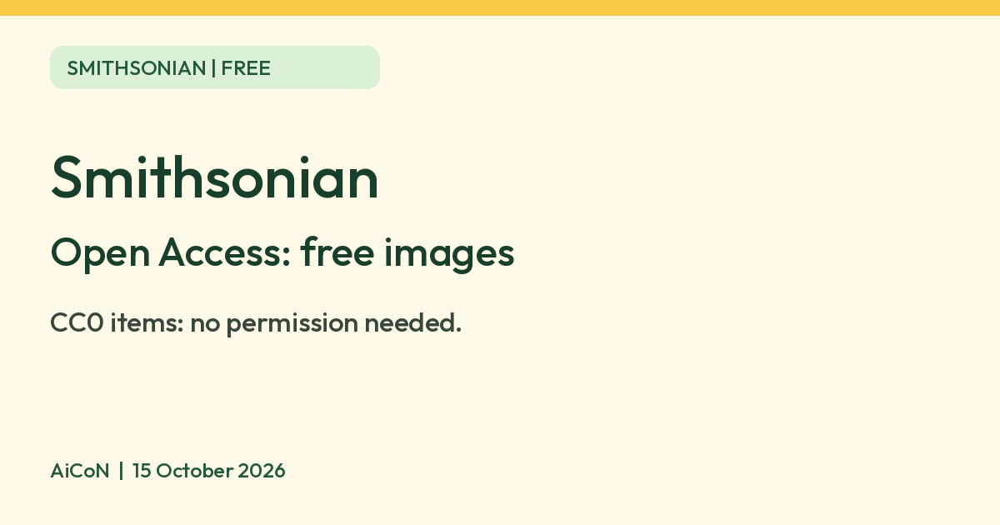

Smithsonian Open Access: millions of free images you can reuse
The Smithsonian says you can download and reuse millions of its images for free, even commercially, when they are marked CC0.

What it is
Smithsonian Open Access is a programme that lets anyone download and reuse images and data from the Smithsonian's collections without asking permission. The Smithsonian's page says there are more than 5.2 million 2D and 3D digital items, from its museums, research centres, libraries, archives and the National Zoo. It is not an AI tool. We included it because it is free content from an official source.
Is it free?
Yes. The Open Access page says you can "download, share, and reuse millions of the Smithsonian's images... without asking". The FAQ says these items are released into the public domain under Creative Commons Zero (CC0). The Smithsonian says you can use CC0 items for any purpose, including commercial use, with no attribution, permission or fee. We saw no sign-up requirement on the pages we read.
What is included, and what is not
- Included: 2D and 3D images, text, sound recordings, research datasets and collections data, where the Smithsonian has made them open access. Look for the CC0 icon on an item.
- Not included: the FAQ lists items that have not been digitised, items under copyright, items with donor, lender or artist restrictions, culturally sensitive items, items the Smithsonian does not fully own, some video and sound recordings, and anything that is a Smithsonian name or trademark. It also lists products the Smithsonian sells or licenses for a fee.
- Items not marked CC0: the FAQ says these carry usage conditions. They can be used for personal, educational and other non-commercial uses consistent with fair use. Commercial use needs written permission from the Smithsonian.
What to watch out for
- CC0 only covers copyright. The Smithsonian says a third party may still have rights such as trademark, privacy or publicity rights, and that you are responsible for getting any permission you need.
- Do not use the Smithsonian's name or logo. The FAQ says the Smithsonian logo and trademarks are not part of open access and need prior written permission. It also says that if you run a bot or social account that shares these images, you should not use the names of the Smithsonian, SI or any museum in the account name, and should not make it look official. That is why this guide uses no Smithsonian logo.
- Old language. The FAQ notes that wording in some collection records reflects the time it was made and may include culturally sensitive information.
- Check the item page. Rules apply item by item, so check the CC0 icon and the notes on each item before you reuse it.
Good to know
- The Smithsonian suggests uses such as art projects, education, research, digital media, publications and merchandise. The page lists "remixes" by organisations such as Google Arts and Culture, Autodesk Tinkercad and Sketchfab.
- Open Access is a website. We did not test it on a phone or check for an official app.
Privacy and data
- The Smithsonian's privacy statement says it does not collect personal information about visitors unless you choose to provide it.
- It says the sites use analytics tools such as Google Analytics and WebTrends, which may store your IP address. It lists data it collects in aggregate, such as device and browser type, pages visited, approximate location and demographic data.
- If you send personal information, for example by email or by registering for events, it may use it to respond and to tell you about its programmes.
India
- We found no India-specific restriction on the pages we read. The Smithsonian says CC0 items can be used for any purpose. We did not check how the law in India treats a particular item.
Frequently asked questions
Is Smithsonian Open Access free?
Yes. CC0 items can be downloaded and reused at no cost.
Can I use the images commercially?
The Smithsonian says yes for items marked CC0, with no permission or credit needed. Other items need written permission.
Can I use the Smithsonian logo?
No. The FAQ says the logo is not part of the open access programme.
Sources: Open Access, Open Access FAQ, Terms of Use, Privacy Statement. Checked 15 October 2026.
No Smithsonian logo is used, because its logo and trademarks are not part of open access. Independent guide, not affiliated.